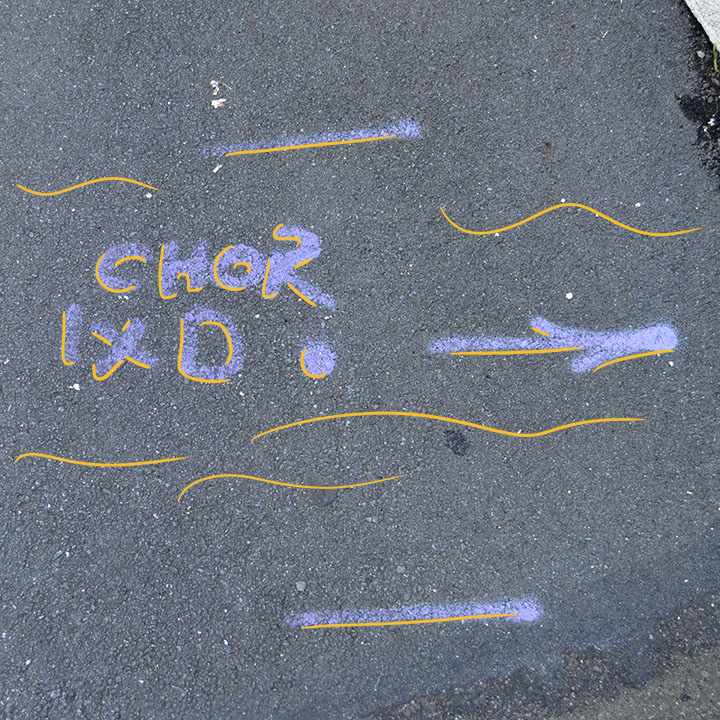
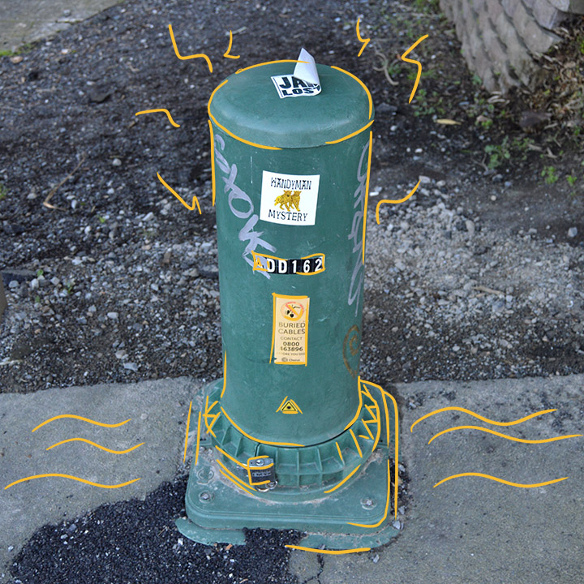
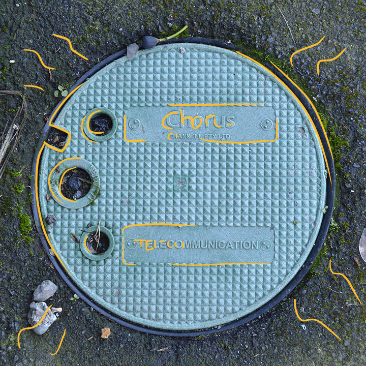

- Infrastructure On the Street -

Pipes and Cables
Pipes and cables are run under ground for data transmition.

Chorus Street Markings
The ground is marked so that contractors know where cables run or need to be run.

Chorus Green Thing
I dunno what this is but it said Chorus on it so I took a picture.

Chorus Underground Cable Access
A cover placed over the cables run underground so that contractors can access the cables if needed.